- Introduction
- let’s see how to use Live Chat
- Subscribers' list
- Messaging window
- Actions
- Select Labels
- Create Labels
- Opt-in through
- Status
- Primary Information
- Conclution
Live Chat
ChatPion, a chatbot-building platform, and multichannel marketing software, has recently presented a feature called Live Chat. On the Live Chat interface, you can see the recent conversations between your users and your Facebook page or Instagram account. Of course, on the Live Chat, you can directly converse via your Facebook page or Instagram account with the users. In one word, you can do everything that you can do on Facebook or Instagram messenger. As well, you can accomplish some other tasks such as creating labels, assigning labels to users, and setting sequence messages.
Moreover, you can subscribe and unsubscribe a user at any time. Likewise, you can pause and resume bot replies for a specific user.
In this article, I will talk about how to perfectly use the feature, Live Chat.
Using Live Chat is as easy as using Facebook and Instagram messenger. That is, using Live Chat is super simple and straightforward.
Let’s see how to use Live Chat
First, go to the dashboard of ChatPion. You will see the live chat menu at the left sidebar of the dashboard. Just click on the Live Chat option.
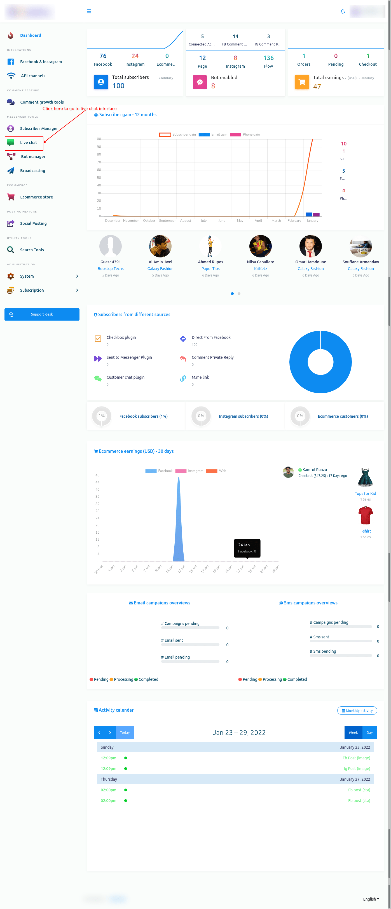Instantly, the interface of the live chat will appear.
Live Chat interface is divided into three sections-- subscribers list, messaging window, and actions.
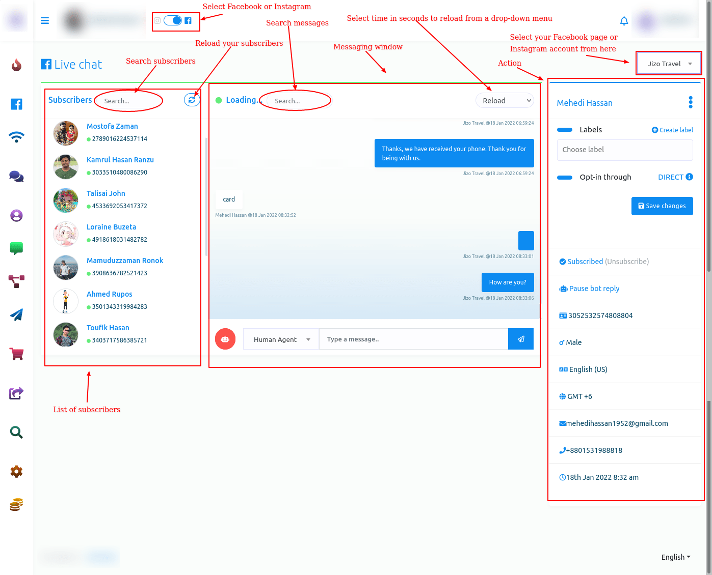Subscribers' list
In the subscribers’ list section, you can see the list of subscribers who you have conversed with recently. Also, you can search for a subscriber on the search bar. And by clicking on the reload button, you can reload the Live Chat, though the live chat reloads automatically at times.

Messaging window
The messaging window is for directly chatting with users.
In the message tag field, you have to select a message tag. Click on the message tag field and instantly will appear a drop-down menu of different message tags such as Human agent, Account update, Confirmed Event, Post purchase Update, Non-promotional(NP registered only). If you select the human agent message tag, you have to reply to the message from users within 24 hours, otherwise, you will get an error. In this case, you have to use other message tags. If you want to know the usage of message tags, read the article by Facebook for developers.
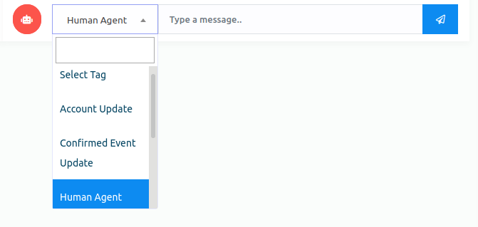Moreover, you can also search messages on the search bar in the messaging window.
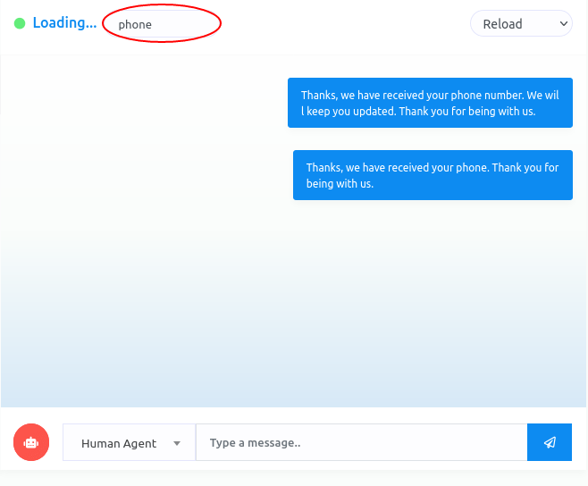Also, you can select a time for automatic reloading by clicking on the reload button. Click on the reload button, and a dropdown menu of different times will appear. Now just select a time. After that, the live chat will reload automatically between the time you have selected.
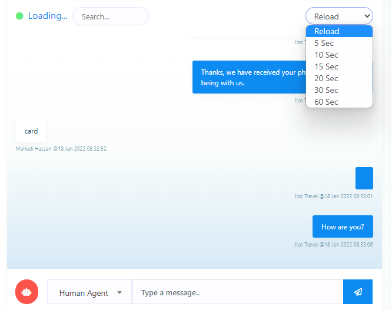Actions
In the action sections, you can accomplish some tasks. Moreover, you can see the primary data of users.
Select Labels
First, you will see a form called a label. From the label field, you can assign a label to a specific user. Click on the label form and instantly appear a drop-down menu of different labels you have created before. Then you have to select a label to assign the label to a subscriber list. The selected labels will appear on the label form. Well, you can select as many labels as you want for a specific user. True, you can remove labels one after another by clicking on the cross icon next to the label name. Of course, you can remove all the labels by clicking on the cross icon in the field.
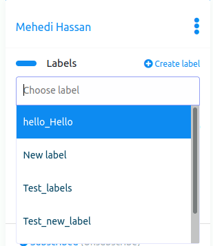 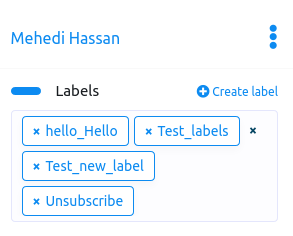Create Labels
Moreover, you can create a new label from here. Click on the create label button and a modal form with one field will appear. Write the name of the new label in the field and click on the new label button, and the label will be created and selected in the field automatically.
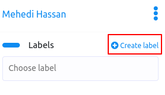 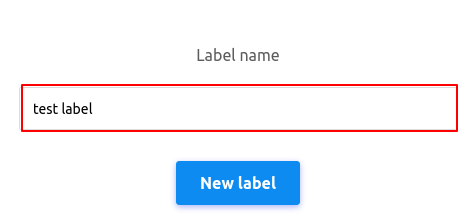After you have selected labels in the Labels field, click on the save changes button to save the changes.
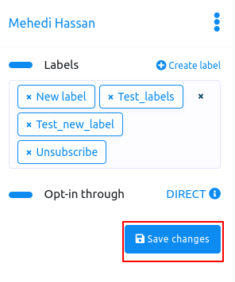Opt-in through
Well, in the opt-in through option, you can see whether the subscriber has come directly through the Facebook page or the source is unknown. If you see the word Direct beside the opt-in through, you know that the user has come through the Facebook page or the Instagram account directly.
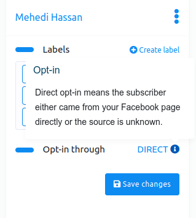Status
By clicking on the status button, you can unsubscribe and resubscribe a user. And by clicking on the bot status button, you can pause and resume the bot reply.
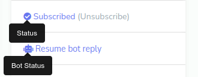Primary Information
You can see the primary information of the subscribers-- subscriber ID, gender, language, time, and date.
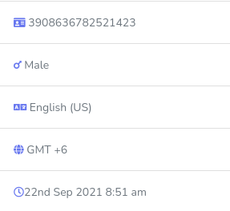Conclution
If a bot forwards a subscriber to a human agent, you can directly chat with the user from the Live Chat without opening the messenger. And on the live chat, any employee can chat with the users without being moderate on the Facebook page or the owner of the Instagram account.
In one word, using Live Chat, you or your employee can easily see the latest conversations and chat with them directly without going to Facebook and Instagram messenger.